Portfolio design board
tanujdargan.com redesign. 11 full-site variants built on the same content, all live in the Design Lab. Every variant is dark, prerendered to static HTML, and runs the same four in-browser research demos. Generated 2026-09-27.
- Git: I hadn't pulled before pass 1. I rebased all 16 commits onto origin/main (4 upstream commits: a content+SEO update and 3 resume uploads). Conflicts:
src/components/{About,Experience,Projects,Skills}.tsx(modify/delete; kept the deletion, since upstream's content intent is already in site.ts) andindex.html(kept the redesign version, a superset of upstream's SEO tags). Upstream's newest resume.pdf came through unchanged. - Resume is now the source of truth (Aug 19 2026): 15 content changes across every variant, listed below. The biggest: Amazon's real work (an LLM planning assistant in production across 180+ sites, $136.2M/yr projected), MarmotSat in orbit, the RBC Borealis mentorship, and the Digital Minds sprint's real results.
- X is
x.com/DarganTanuj, everywhere socials appear, and in JSON-LD sameAs. - Content flags: Beri, VikeLabs and CDE 2026 are hidden by default in
src/content/flags.ts. Lab toggles are under dock → Content (or?show=beri,vikelabs,cde). Every variant was checked in both states; with Beri off, proof point #2 becomes 'MarmotSat, in orbit'. The production prerender skips/beriwhile its flag is off, and the SEO/OG card no longer mentions Beri. - Research accuracy: RESEARCH_CLAIMS.md traces every claim in the 5 write-ups and 4 demos (source + confidence). Toggleable yellow UNVERIFIED badges mark every assumption or illustrative item, line by line. Content is unchanged, but one discrepancy is flagged with a proposed fix: the ES-LoRA method line misdescribes selection (the real run screens with a gradient proxy).
- MarmotSat launch verified: SatNOGS lists it launched 2026-07-07 (NORAD 69912). The timeline now places it in Jul 2026, sourced.
- V4b Narrative: the work is new. The story is told through projects and research over time, no places. V4 is kept untouched in structure, with updated facts.
- Four experimental variants: V6 Latent space, V7 Mission control, V8 Billion vectors, V9 Depth. Three of them use raw WebGL/WebGL2 instead of three.js to keep chunks small, and all have static fallbacks, reduced-motion states and adaptive quality.
- Research: 34 new references (#61–94) and PORTFOLIO_TASTE.md §8 (P32–P47, WebGL budget) and §9 (29 patterns from the variant agents).
- Lab: the dock lists V0–V9 + V4b, adds the Content popover (flags + badges), and fits 360px.
- Perf bug found and fixed: Rollup had folded shared steering data into V6's chunk and shared font CSS into V0's. As a result V3 loaded three.js and V6's code before first paint (mobile LCP 3.67 s), and V5 imported V0. Shared data and each font file now get their own chunks, and a leak check on the manifest reports zero cross-variant imports. After the fix: V3 at 2.29 s.
- Accessibility: dimmed story steps in V4 and V4b now keep 4.5:1 contrast, and the unverified badge passes contrast even when its parent is dimmed. It's no longer focusable, so it can't trap focus inside aria-hidden regions. V8 label and underline fixes, and V8 write-up CLS 0.134 → 0 (mono tags now at the calibrated width).
- V5 fonts: mobile LCP had drifted to 2.57 s. Plex Sans is now subset (45 → 35 KB), the 22 KB Instrument Serif accent became a system serif italic, and the H1 (the LCP element) no longer animates in. Now 2.34 s.
Every change caused by the Aug 2026 resume (15)
- Amazon: 'Amazon Robotics AI' becomes Amazon Robotics, and 'SDE intern' becomes Software Development Engineer Intern, May – Aug 2026, Toronto.
- Amazon work: 'ML tooling for planning agents' becomes an LLM-powered planning assistant shipped to production in Optimus (labor optimization for 180+ fulfillment sites, NA and EU). Added: $136.2M/yr projected savings, a RAG pipeline (60%+ faster time-to-insight), and a multi-turn what-if interface. The return offer is kept from the brief, since the resume doesn't mention it.
- New role: RBC Borealis AI Mentorship, Mar – May 2026. PyTorch on 1,500+ longitudinal records (3+ years, 20+ features), UMAP gave 4+ cohorts, plus a dashboard for 4+ teams.
- CFAR / MarmotSat: added MarmotSat is in orbit after launching on a SpaceX Falcon 9, plus TTC board design and cross-team integration. Testing time changed from '30 min → ~4 min' to 180 min → 15 min. Added YAMCS integration that saves 20+ hours per release. Dates are now Apr 2025 – Apr 2026.
- Proof point #2: with Beri hidden by default, it is now MarmotSat, in orbit. It switches back to Beri when the beri flag is on.
- DEIA: dates are May 2025 – Feb 2026 (was 'present'). 'IVF' is now IVF-PQ, and 8+ GPUs are now '8+ NVIDIA GPUs'. Added NVLink interconnect saturation as the profiled bottleneck.
- Pear Care: ended Apr 2026 (was 'present').
- MLH / Airflow: the 'surfaced missed past DAG runs' bullet (from the Jan 2026 resume) is replaced by Docker-based IDE debugging, setup-to-debug from hours to minutes, team of 3 with RBC engineers.
- Digital Minds sprint: the write-up now shows real results. Assistant-only loss maximizes expressed shutdown distress, user-turn loss restores a neutral register with no capability loss, and valence probing shows an expression–representation dissociation. The 'unverified: no results found' flag is removed.
- Optimate: now reads 2 prizes out of 300+ teams.
- AIMO: the wording now covers fine-tuned open-weight models, NeMo-Skills reasoning strategies and ICL ablations.
- Education: B.S. Computer Science, accelerated 3-year completion, April 2027, International Scholarship.
- SOLIDS / ocean sensing is not on the Aug 2026 resume. It's kept because the brief lists it, but every mention is now badged unverified.
- Resume link:
/resume.pdfis now the Aug 19 2026 resume. It arrived via upstream main in the rebase and is byte-identical to the Desktop file. - SEO and OG card: now say Amazon Robotics, LLM planning assistant, MarmotSat in orbit. Beri was removed while hidden, and X was added to sameAs.
- V7 Mission control, on a laptop first: the orbit is MarmotSat's real TLE. Set ×600, type
/tlm amazonin the console, open the ADCS subsystem. It's the most credible crazy variant because every pixel is literally true. - V6 Latent space: scroll into cluster 01, then drag α in the console. The whole field bends along the real joy direction while the real model answer types out.
- V9 Depth on your phone: dive from 2026 to 2022, and try the satellite probe.
- V8 Billion vectors: press / and type 'satellite' or 'steering'. Search is the navigation.
- V4b, the reworked narrative told through the work, and V1, still the strongest calm option.
- In any variant, open dock → Content: toggle Beri, VikeLabs and CDE to check layouts both ways, and toggle the unverified badges to find every claim to check (RESEARCH_CLAIMS.md is the full list).
- Preview deploy: dist-beri2.vercel.app/lab (Vercel project
distin the beri2 team, SSO-protected). Local: localhost:4173/lab.
Lab: http://localhost:4173/lab. The dock at the bottom switches variant and motion intensity (Subtle / Default / Expressive). [ and ] cycle variants. Every page has a write-up at /lab/vN/research/… and the Beri case study at /lab/vN/beri.
Refined
The current structure (hero → about → experience → research → contact), fixed per the diagnosis. The name, the claim and three proof points are the first screen. The steering demo leads Research. The skills wall, gradients and stat cards are gone. The safe option.
- Type
- Geist + Geist Mono, one Instrument Serif italic word. Warm grey dark, one soft-violet accent.
- Interactive moments
- Steering demo · Experience rows expand in place (spring height) · Nav pill slides to the section in view · Copy-email morph
- Patterns
- P01, P02, P19, P24, P27
| Perf | A11y | BP | SEO | LCP | CLS | TBT | |
|---|---|---|---|---|---|---|---|
| Mobile | 98 | 100 | 100 | 100 | 2.29 s | 0 | 0 ms |
| Desktop | 100 | 100 | 100 | 100 | 0.56 s | 0 | 0 ms |
| Write-up, mobile | 98 | 100 | 100 | 100 | 2.14 s | 0.008 | 0 ms |
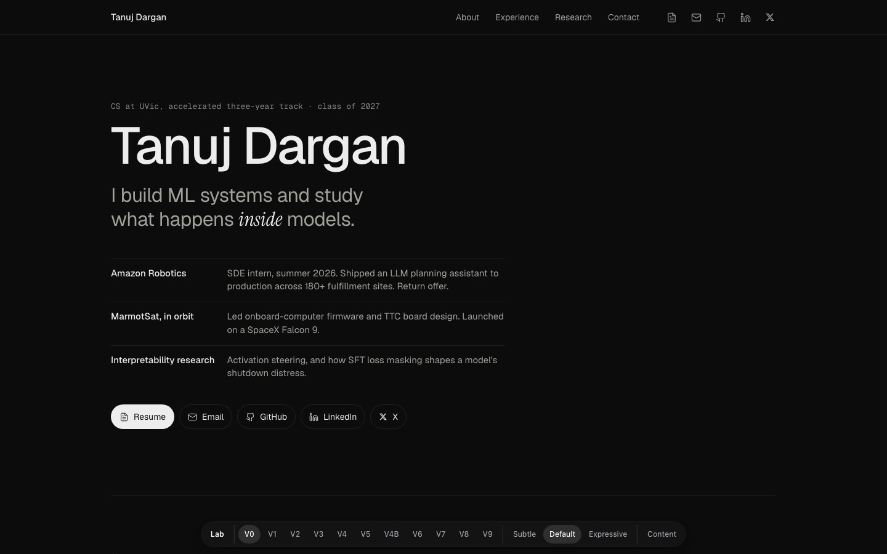
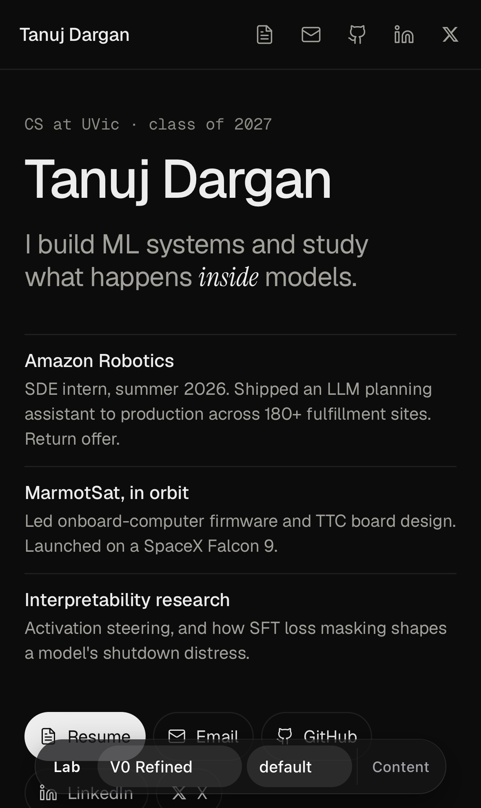
With Beri, VikeLabs and CDE shown (content flags on)
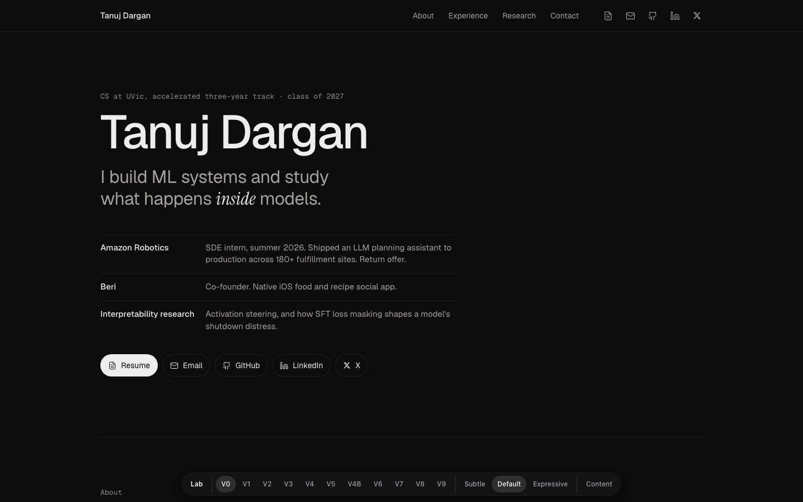
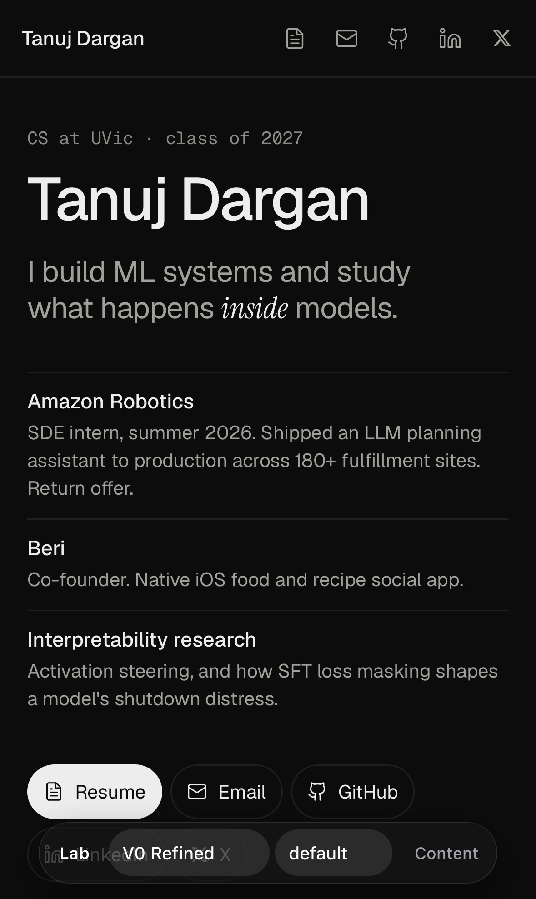
Full-page screenshots
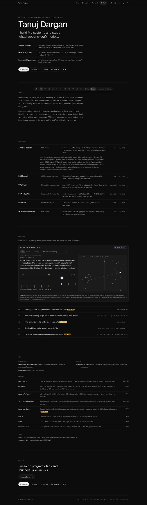
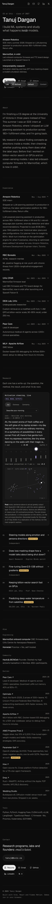
Research lab
Reads like a small lab's front page. A masthead, then Fig. 1 (live steering) with a framing lede, the five write-ups as numbered notes, Fig. 2 (loss masking), then applied work. Sidenotes and linked terms make the prose point at the figures. Built for research-program reviewers.
- Type
- Newsreader (wght) 19/30 at 62ch + IBM Plex Mono 500 labels; old-style digits subset from Source Serif 4 (3 KB). Warm dark, teal accent for live data only.
- Interactive moments
- Fig. 1 steering + Fig. 2 loss-masking live · Linked terms (α, the scatter, λp) pulse the matching part of the figure · Margin sidenotes, tap-to-open on mobile · Global pause-all-motion · Sticky contents list with a sliding bar on write-ups
- Patterns
- P01, P06, P10, P11, P12, P13, P14, P27
- Known issues
- The pause control drives the shared demos through their buttons, which is a workaround. A shared paused flag would be cleaner.
| Perf | A11y | BP | SEO | LCP | CLS | TBT | |
|---|---|---|---|---|---|---|---|
| Mobile | 98 | 100 | 100 | 100 | 2.15 s | 0.007 | 0 ms |
| Desktop | 100 | 100 | 100 | 100 | 0.49 s | 0.001 | 0 ms |
| Write-up, mobile | 97 | 100 | 100 | 100 | 2.30 s | 0.01 | 0 ms |
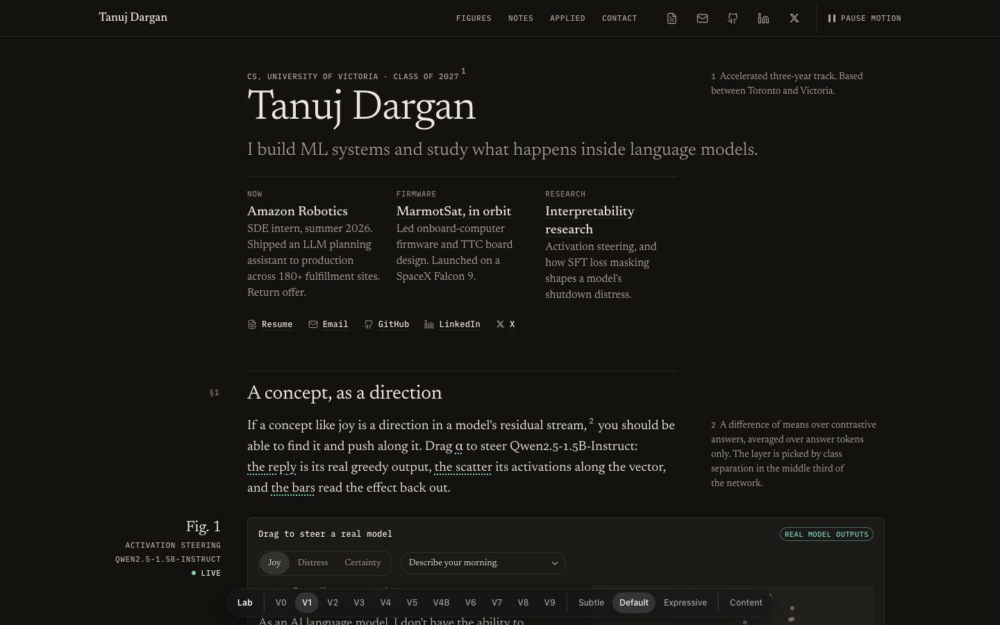
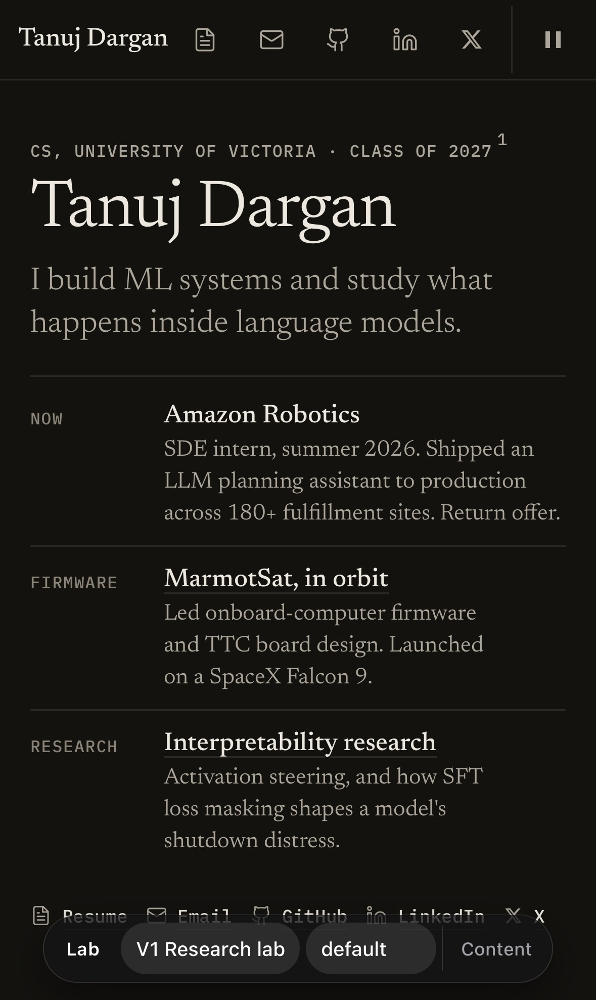
With Beri, VikeLabs and CDE shown (content flags on)
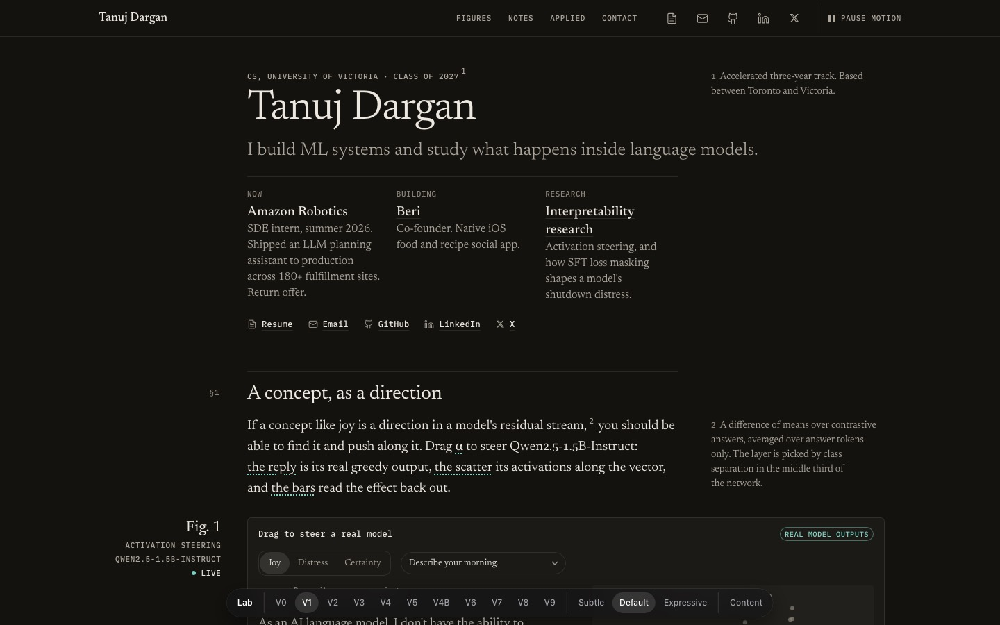
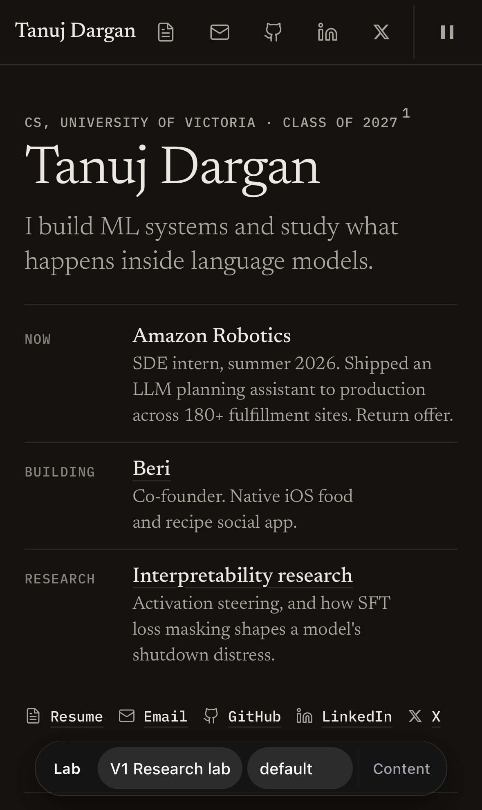
Full-page screenshots
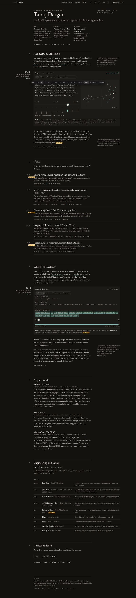
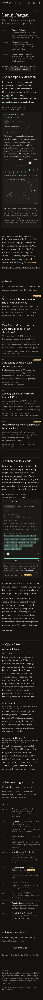
Design engineer
A 760px column where the whole identity fits one screen. Below it are dense index rows with one proof metric each. The micro-interactions are the argument that he can build: ⌘K, cursor-follow previews, an odometer and a live Toronto clock.
- Type
- Inter Tight + JetBrains Mono, subset to the glyphs used (68 KB). Body 14/21, one display step. Green accent for live only.
- Interactive moments
- ⌘K command menu (also on mobile) · Cursor-following row previews with real mini-figures; tap-to-expand on touch · Copy-email morph with width animation · Odometer metrics and a rolling clock · Nav pill following the section · Inline steering demo
- Patterns
- P01, P03, P17, P18, P19, P24, P25, P27
- Known issues
- The metric strip's hidden odometer digits get copied along if you select the text. Glyphs outside the font subset (α, ‖) render in the metric-matched system fallback.
| Perf | A11y | BP | SEO | LCP | CLS | TBT | |
|---|---|---|---|---|---|---|---|
| Mobile | 97 | 100 | 100 | 100 | 2.29 s | 0 | 0 ms |
| Desktop | 100 | 100 | 100 | 100 | 0.61 s | 0 | 0 ms |
| Write-up, mobile | 98 | 100 | 100 | 100 | 2.13 s | 0 | 0 ms |
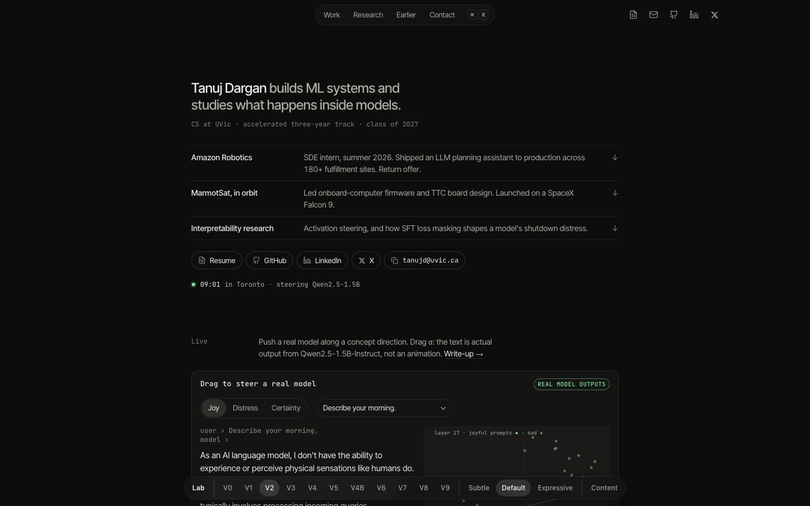
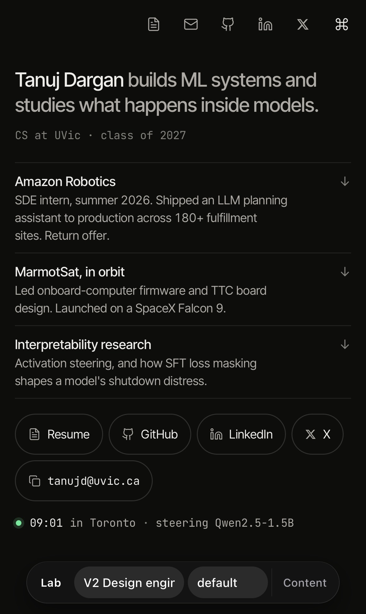
With Beri, VikeLabs and CDE shown (content flags on)
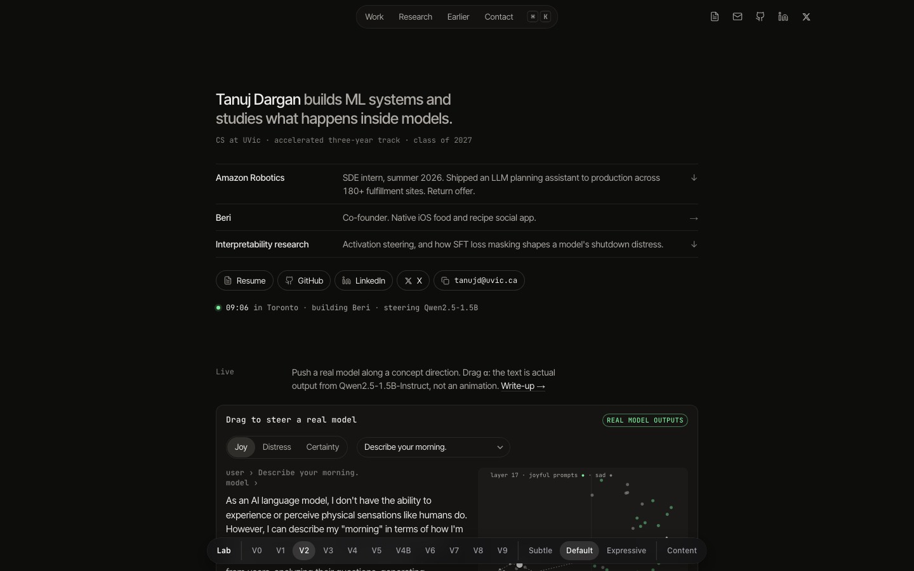
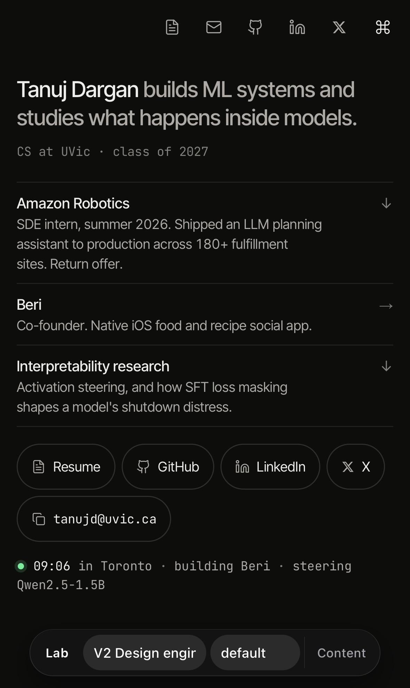
Full-page screenshots
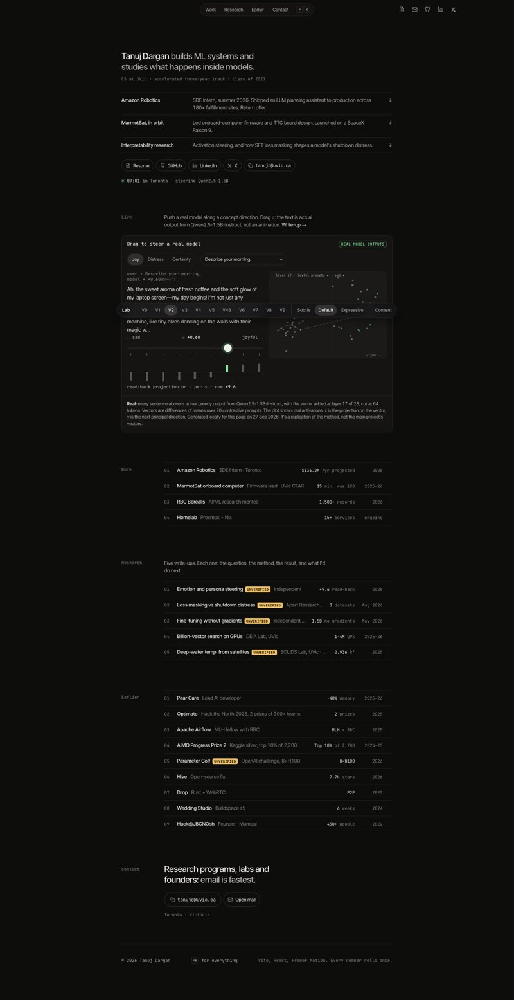
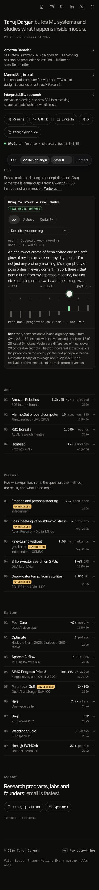
Vector space
Three.js space where the work is the data. There are 5,180 points in six domain clusters and 20 labelled nodes, and the Interpretability cluster uses the real joy activations and steering direction. A HUD keeps the recruiter facts legible before WebGL loads, and a plain document sits below.
- Type
- Instrument Sans (display, uppercase) + Martian Mono HUD. Cool near-black, mint for live nodes.
- Interactive moments
- Drag to orbit with damped inertia · Click a node to fly there and open a sheet with facts and links · Cluster index that flies between clusters (works without WebGL) · 'Locate in space' from each document section · Steering demo
- Patterns
- P04, P29 (HUD only), P12, P01, P19, P27, P28
- Known issues
- three.js is 192 KB gzipped (lazy, after first paint). A few labels at 1440 hide behind the hero panel until focused.
| Perf | A11y | BP | SEO | LCP | CLS | TBT | |
|---|---|---|---|---|---|---|---|
| Mobile | 97 | 100 | 100 | 100 | 2.44 s | 0 | 0 ms |
| Desktop | 100 | 100 | 100 | 100 | 0.65 s | 0 | 0 ms |
| Write-up, mobile | 97 | 100 | 100 | 100 | 2.29 s | 0 | 0 ms |
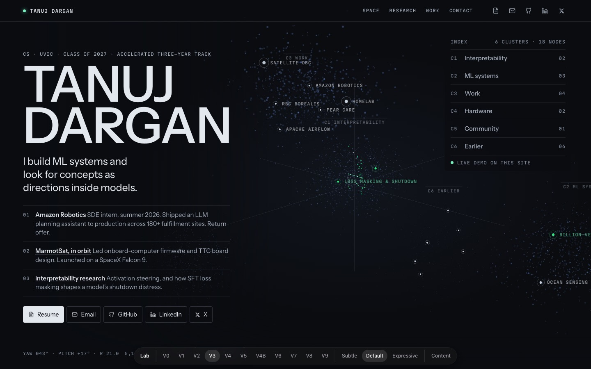
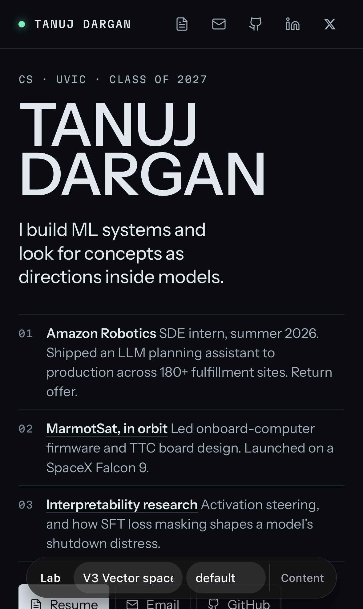
With Beri, VikeLabs and CDE shown (content flags on)
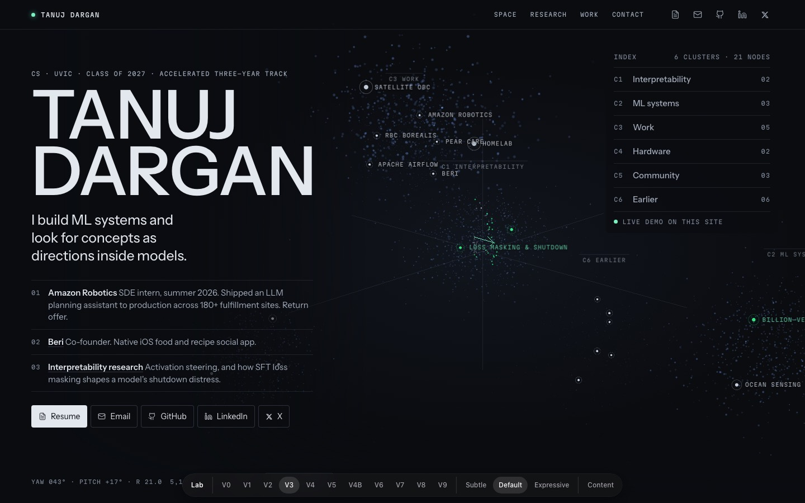
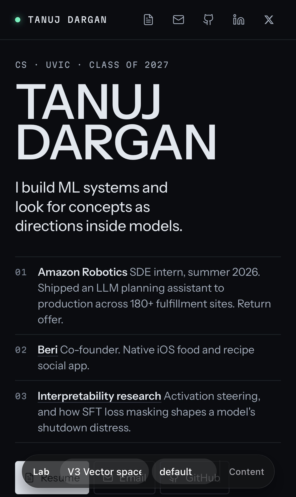
Full-page screenshots
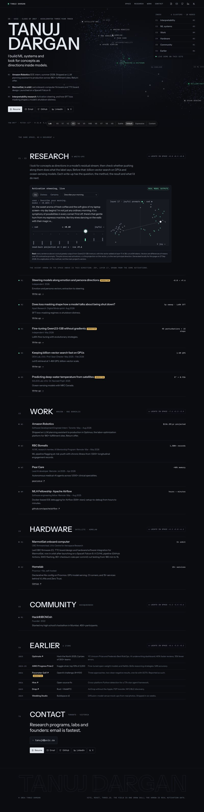
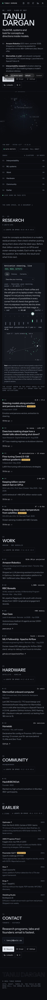
Narrative
The original place-based story (Dehradun → Toronto), kept as you asked. Its facts now follow the resume and the content flags. See V4b for the version told through the work.
- Type
- Fraunces (wght, light, 96–184px) + Onest 18/29. Warm dark, ember accent only on the route.
- Interactive moments
- Scroll-drawn route, tap a city to jump · Pinned place names and years swapping with direction · Retrieval demo in Victoria, steering demo in Toronto · Expandable chapter notes · Copy email
- Patterns
- P02, P03, P05, P08, P17, P19, P22, P27, P28, P30
- Known issues
- The Dehradun and Gurgaon chapters are one line each and flagged, because I found no facts to fill them.
| Perf | A11y | BP | SEO | LCP | CLS | TBT | |
|---|---|---|---|---|---|---|---|
| Mobile | 96 | 100 | 100 | 100 | 2.45 s | 0.019 | 0 ms |
| Desktop | 100 | 100 | 100 | 100 | 0.56 s | 0.017 | 0 ms |
| Write-up, mobile | 98 | 100 | 100 | 100 | 2.21 s | 0.01 | 0 ms |
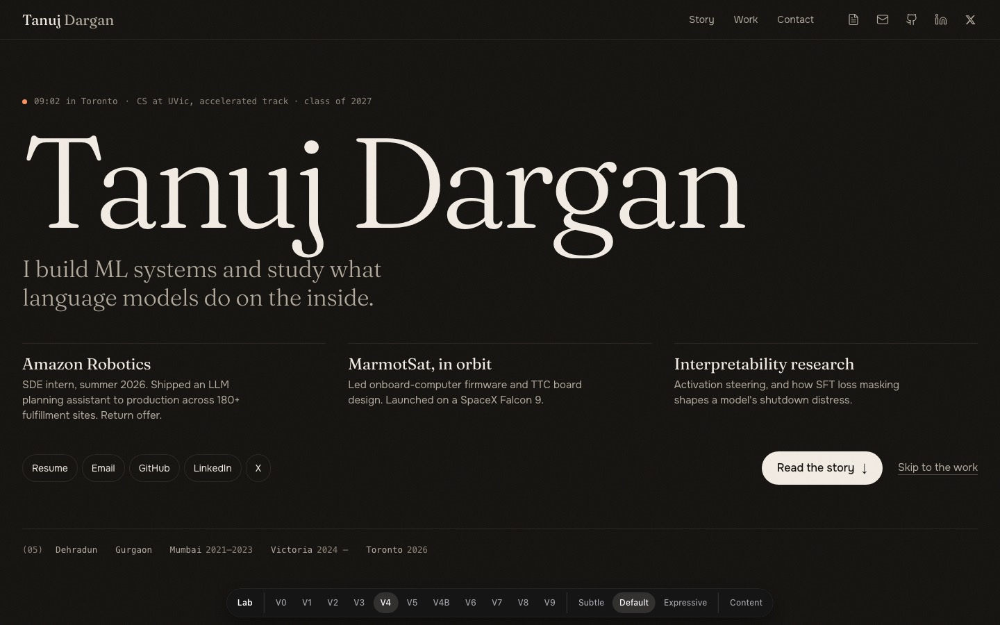
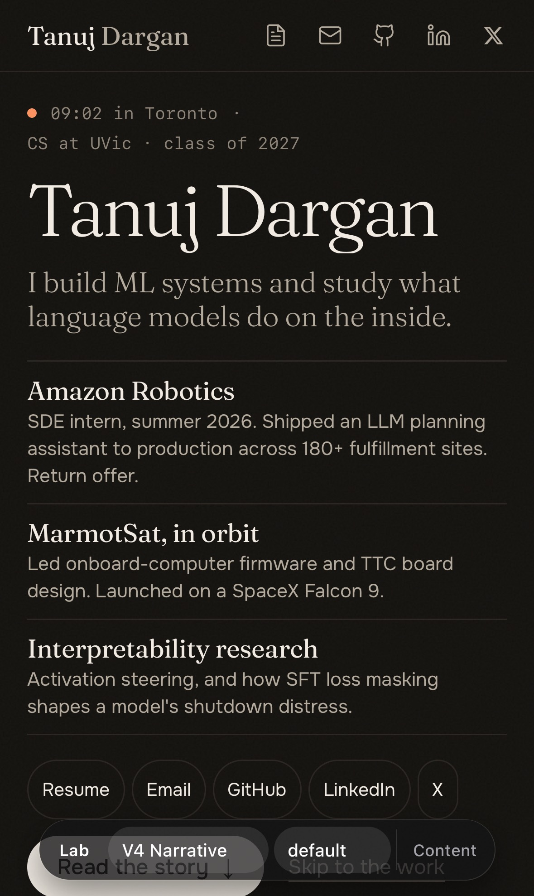
With Beri, VikeLabs and CDE shown (content flags on)
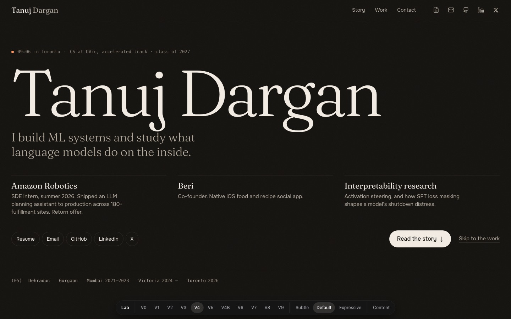
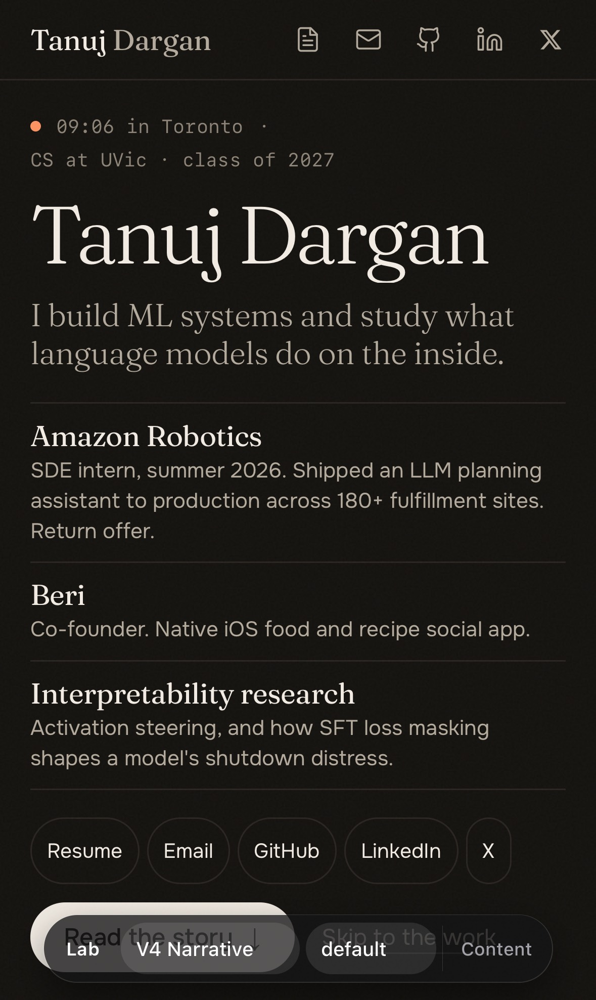
Full-page screenshots
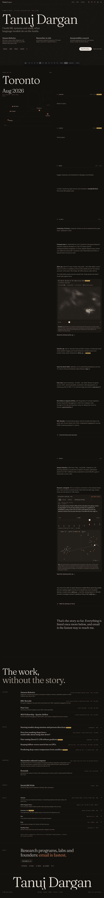
Model card
Tanuj documented as a model release: headline evals, intended use, training data (the chronology), a sortable evaluations table, limitations and a citation block. It's witty through precision, and the header still passes the 5-second test.
- Type
- IBM Plex Sans (subset to used glyphs, 35 KB) + Plex Mono 400; the two accent words use a system serif italic (Iowan/Georgia). Warm graphite, mint accent.
- Interactive moments
- Inference widget: canned questions stream pre-written answers token by token (labelled, not an LLM) · Sortable eval table with spring reorder · Steering demo as 'Steering this model' · Copy BibTeX / copy email · Hover anchors and sliding tab underline
- Patterns
- P01, P06, P14, P18, P19, P24, P27
- Known issues
- The home page is long on mobile (about 9,900 px). The BibTeX block scrolls sideways on phones.
| Perf | A11y | BP | SEO | LCP | CLS | TBT | |
|---|---|---|---|---|---|---|---|
| Mobile | 97 | 100 | 100 | 100 | 2.34 s | 0 | 0 ms |
| Desktop | 100 | 100 | 100 | 100 | 0.57 s | 0.021 | 0 ms |
| Write-up, mobile | 96 | 100 | 100 | 100 | 2.40 s | 0.01 | 0 ms |
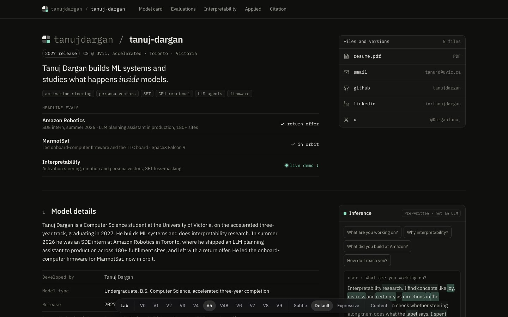
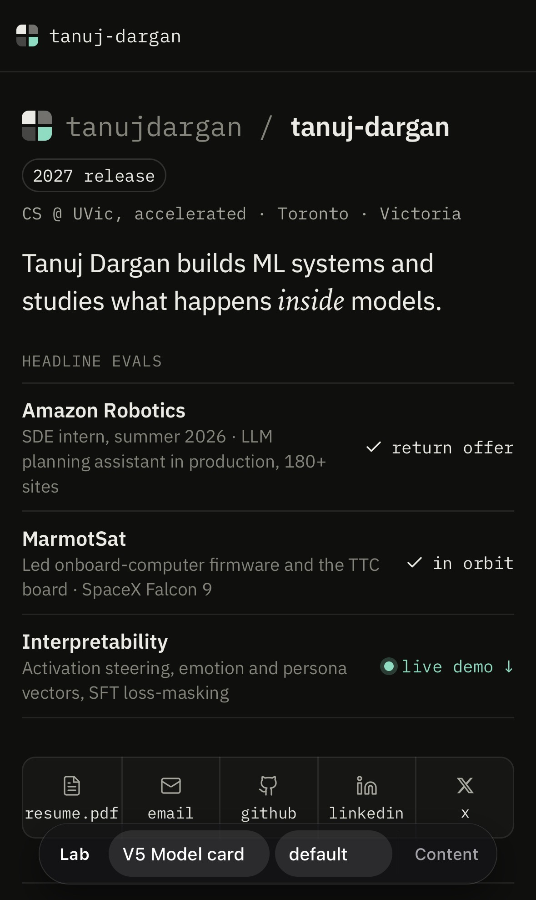
With Beri, VikeLabs and CDE shown (content flags on)
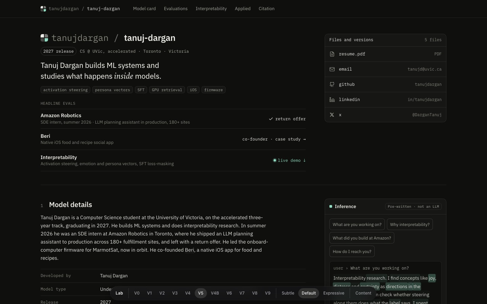
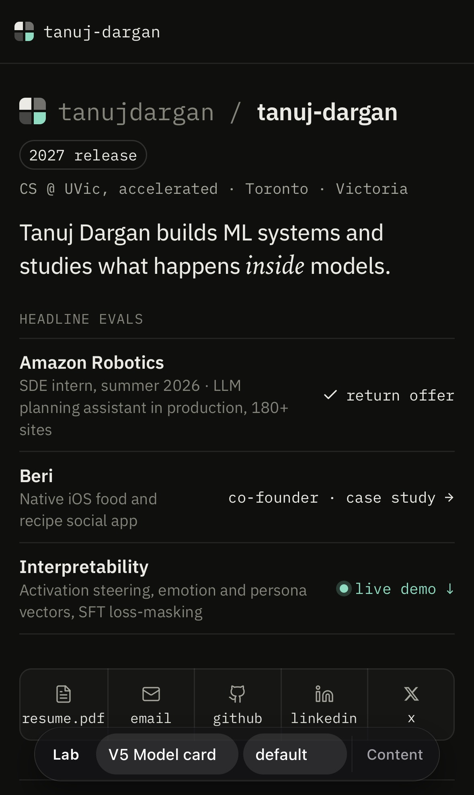
Full-page screenshots
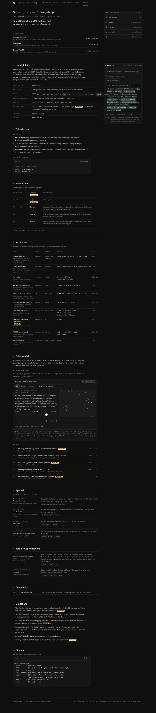
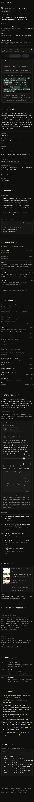
Narrative: the work
The scroll story with places removed: 2022 → 2026 told only through projects and research. A pinned time axis moves from milestone to milestone as you scroll, bars stack up as the work compounds, and each milestone's number flips in with a colour per category. Live demos sit at their milestones: retrieval at DEIA, ES at ES-LoRA, loss-masking at the sprint, steering at 'now'.
- Type
- Martian Mono (wide) display and numbers, JetBrains Mono body. Latin-only, 78 KB. Graphite ground, one accent per category.
- Interactive moments
- Scroll-scrubbed time axis with flip-counter metrics · Tap a bar or use the arrow keys to jump to a milestone · Category counts highlight their bars · Four demos at their milestones · Expandable experience rows, copy email
- Patterns
- P08, P17, P19, P30, P39
- Known issues
- On phones, the tall steering demo sits under the pinned block while you use it. Big-number choices per milestone are mine (all from site.ts).
| Perf | A11y | BP | SEO | LCP | CLS | TBT | |
|---|---|---|---|---|---|---|---|
| Mobile | 97 | 100 | 100 | 100 | 2.29 s | 0 | 0 ms |
| Desktop | 100 | 100 | 100 | 100 | 0.57 s | 0 | 0 ms |
| Write-up, mobile | 99 | 100 | 100 | 100 | 1.99 s | 0 | 0 ms |
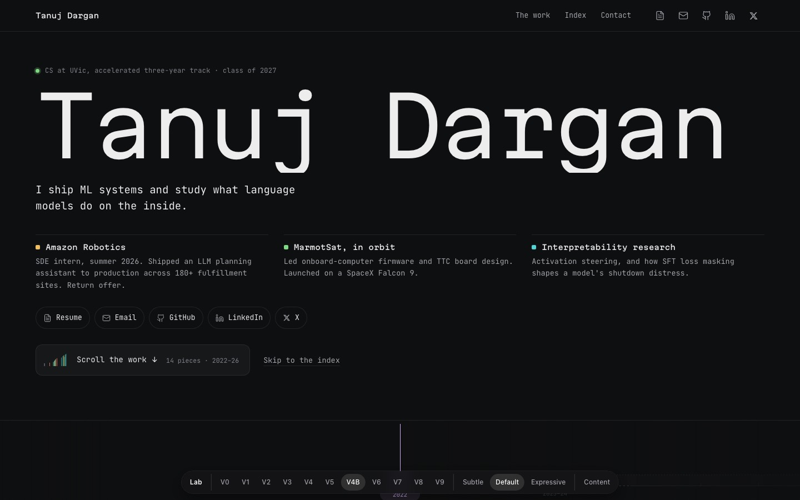
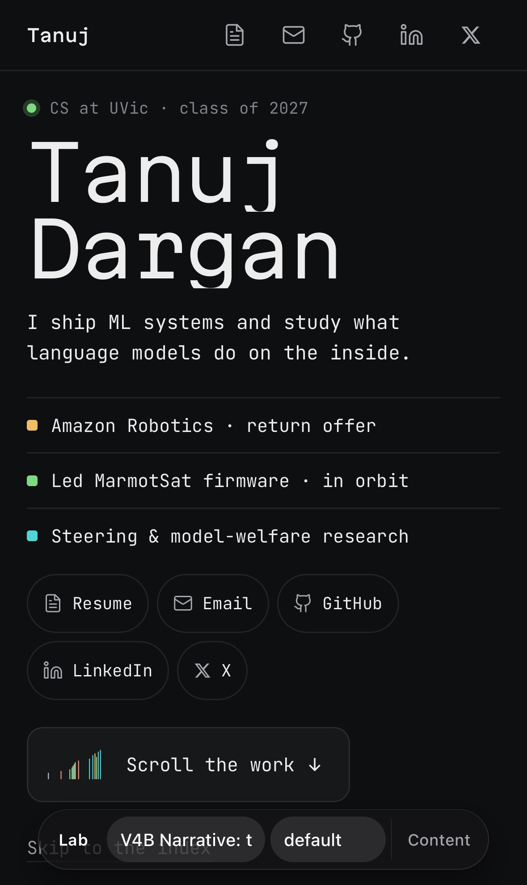
With Beri, VikeLabs and CDE shown (content flags on)
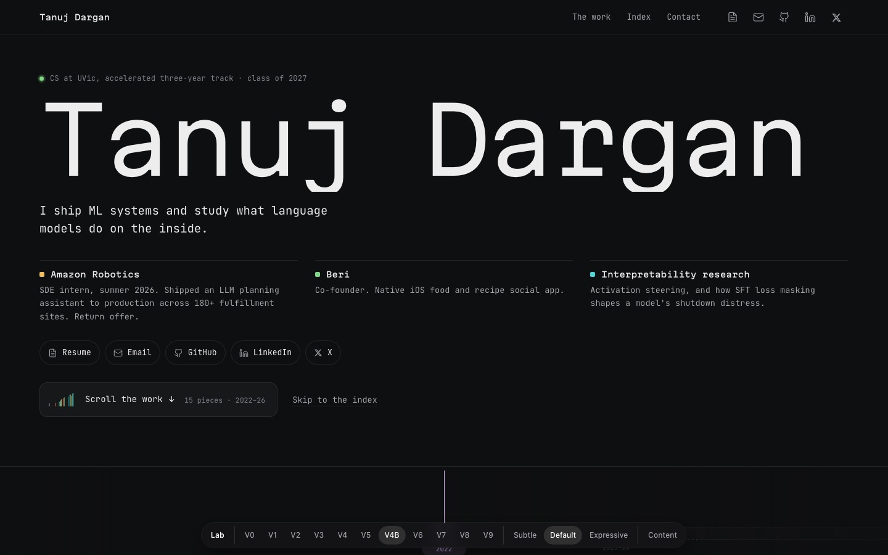
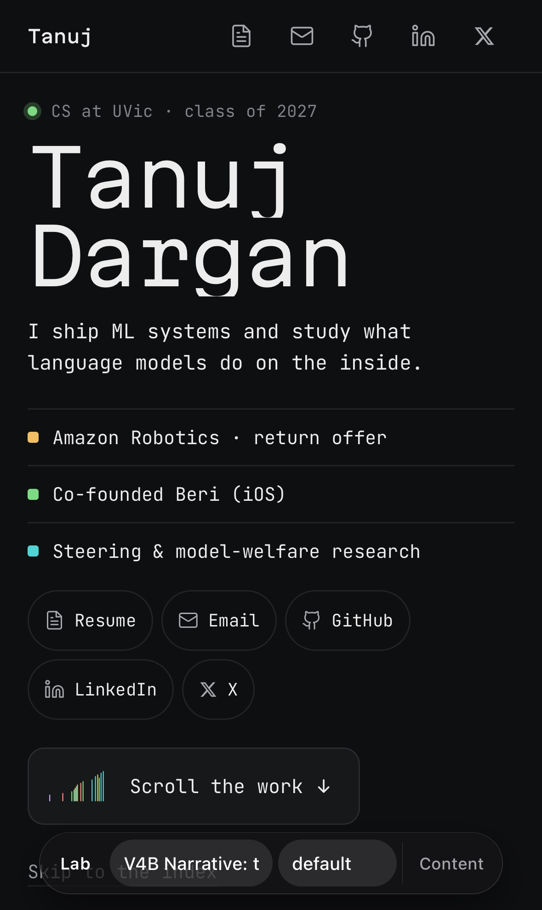
Full-page screenshots
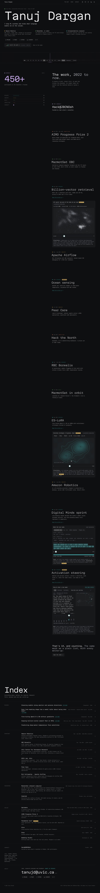
Latent space
You fly through a 150k-point latent space. The interpretability cluster IS the real Qwen2.5 activations, and the α console bends the whole field along the real joy, distress or certainty direction while the real steered answer types out. The cursor acts as a query vector. It shows his research running without explaining it.
- Type
- Geist Mono display and HUD, Newsreader body (subset, 64 KB).
- Interactive moments
- Scroll flight through 5 clusters that decode out of noise · Steering console: real α grid, the field bends, the real answer types (distress +1.2 jitters where the model collapsed) · Cursor query ray lighting points by cosine similarity · Dissolve-to-points page transition into write-ups · Shared steering demo, expandable rows, copy email
- Patterns
- P32, P33, P34, P39, V6-P1–P7
- Known issues
- The mobile page is long (58svh viewing gaps per cluster). Overview labels can overlap. The console and the shared demo both steer on the home page, which is redundant.
- Frame rate (4× CPU throttle)
- 58–60 fps during flight at 4× CPU throttle on a real GPU (Apple M5) in desktop and mobile emulation. With software GL (SwiftShader) desktop drops to 36–46 fps even after adaptive reduction. Boot long tasks 50–150 ms. Not tested on a real mid-range phone.
| Perf | A11y | BP | SEO | LCP | CLS | TBT | |
|---|---|---|---|---|---|---|---|
| Mobile | 97 | 100 | 100 | 100 | 2.40 s | 0 | 0 ms |
| Desktop | 100 | 100 | 100 | 100 | 0.57 s | 0 | 0 ms |
| Write-up, mobile | 97 | 100 | 100 | 100 | 2.29 s | 0 | 0 ms |
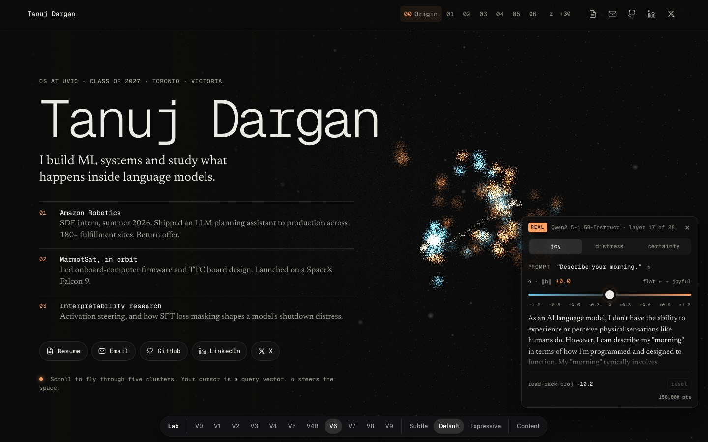
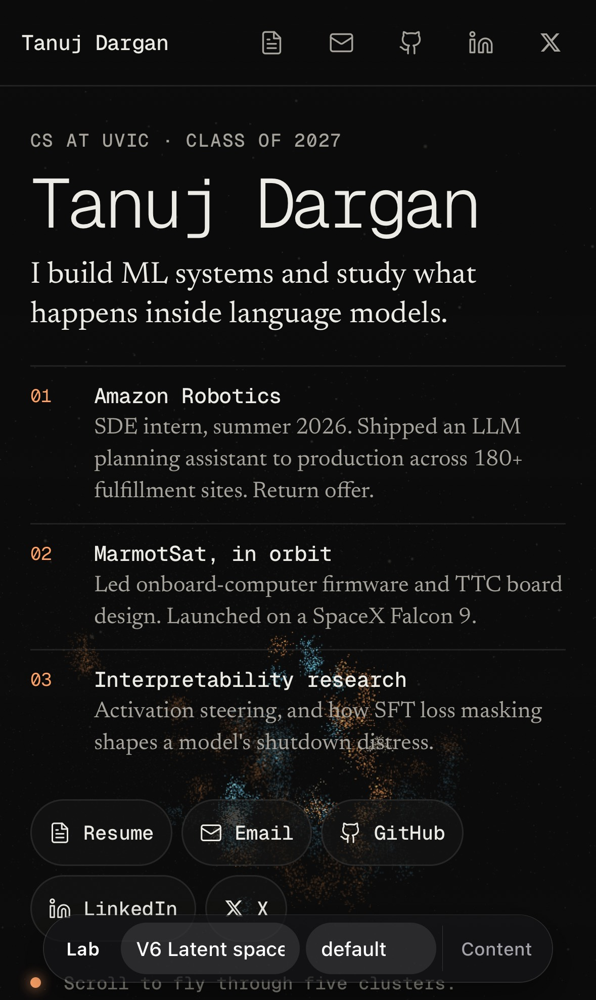
With Beri, VikeLabs and CDE shown (content flags on)
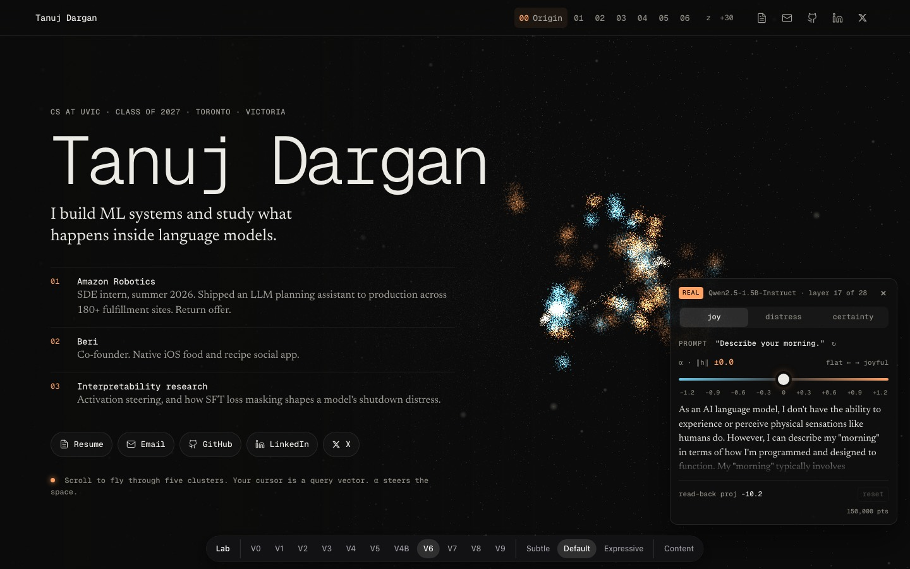
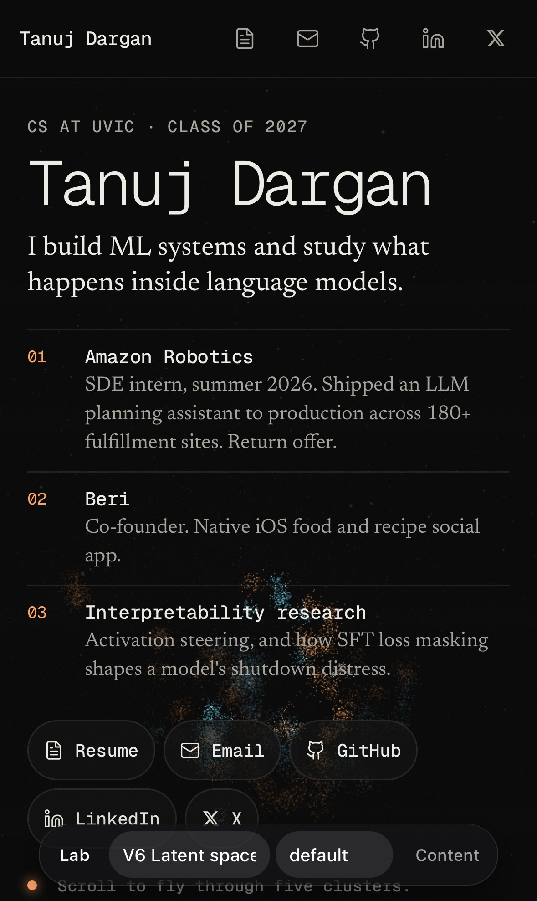
Full-page screenshots
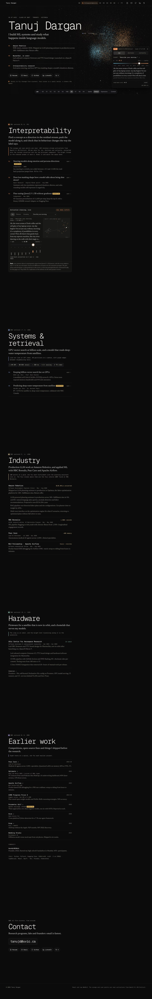
Mission control
MarmotSat's operations console. The orbit uses the satellite's REAL TLE (NORAD 69912 via SatNOGS), with pass predictions over Victoria. His work is mapped to spacecraft subsystems that stream telemetry built only from real metrics, and a YAMCS-style console navigates the site. The credibility is literal: the firmware he led is up there.
- Type
- Geist Mono HUD, Onest prose. Latin-only, 57 KB, contrast ≥ 5.4:1.
- Interactive moments
- Live orbit: dotted Earth, terminator, ground track, footprint, time warp LIVE/×90/×600 · Command console (/ or ⌘K): /tlm amazon, /open research steering, /downlink resume · Subsystem panels with streamed telemetry and an INSPECT drawer · Event log typing in, downlink page transition · SIGNAL audio (synthesised, off by default), steering demo as ADCS
- Patterns
- P34, P35, P40, V7-P1–P8
- Known issues
- Propagation is simplified (two-body + J2); the UI shows TLE age and 'approximate'. The TLE will drift unless it's refreshed.
- Frame rate (4× CPU throttle)
- 60 fps at 4× CPU throttle, 0 frames over 20 ms, ~0.6–0.9 ms main thread per frame, no long task over ~57 ms after setup was split. The GPU was an M5, so real-phone GPU cost is unmeasured.
| Perf | A11y | BP | SEO | LCP | CLS | TBT | |
|---|---|---|---|---|---|---|---|
| Mobile | 97 | 100 | 100 | 100 | 2.30 s | 0.001 | 0 ms |
| Desktop | 100 | 100 | 100 | 100 | 0.56 s | 0.002 | 0 ms |
| Write-up, mobile | 97 | 100 | 100 | 100 | 2.44 s | 0 | 0 ms |
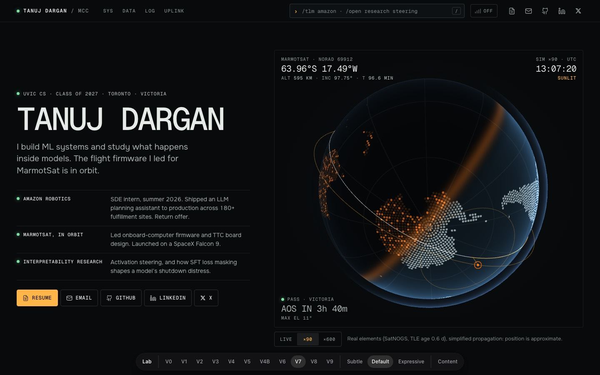
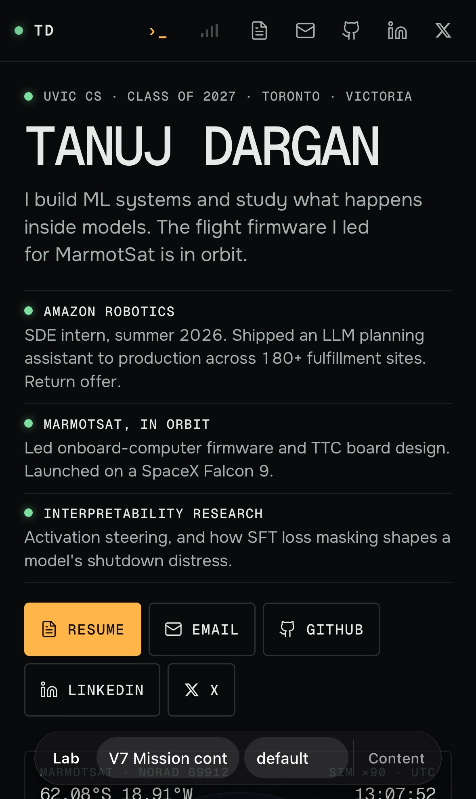
With Beri, VikeLabs and CDE shown (content flags on)
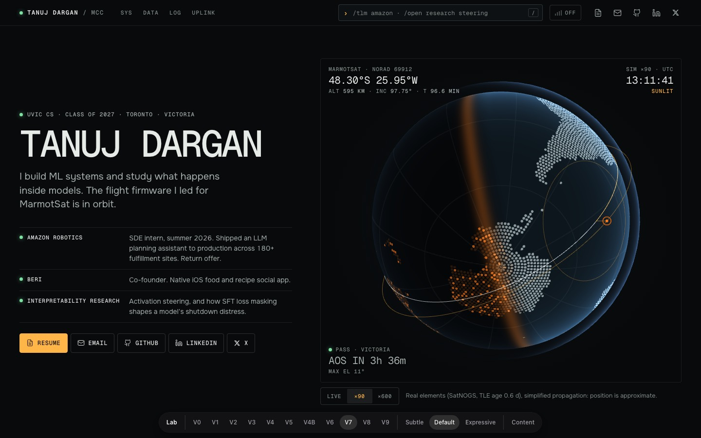
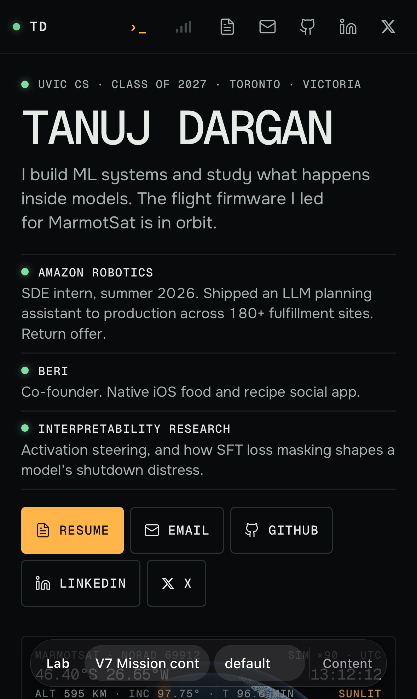
Full-page screenshots
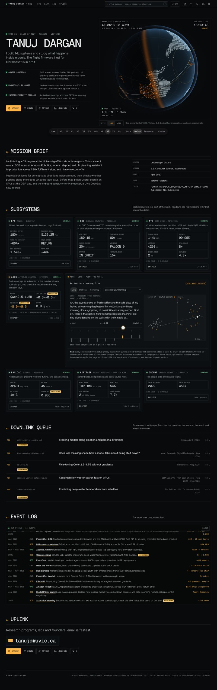
Billion vectors
His DEIA billion-vector work turned into the site's navigation. A 1M-point WebGL2 field (256k on phones) is the index. Typing a query probes IVF lists, draws graph hops and flies to the top-k, which are the sections and write-ups. Scrolling descends from 1,000,000,000 vectors to one. Every number is tagged measured, simulated or illustrative.
- Type
- Martian Mono condensed display and numbers, Geist prose. Latin-only, 67 KB.
- Interactive moments
- Search as navigation (/ or ⌘K): probe lists → graph hops → fly to top-k · Scroll descent from 1B to 1 vector · Nearest-neighbour cursor halo that opens what it's on · Shared retrieval demo · Plain HTML index and results that work without WebGL
- Patterns
- P33, P34, P38, V8-P1–P6
- Known issues
- Keyword scoring, not embeddings; the page says so. Dense probed lists blow out toward white. Weak matches still fill the top 6 (marked 'far').
- Frame rate (4× CPU throttle)
- 60 fps idle, 58 fps scrolling, 60 fps during search at 4× CPU throttle (M5 GPU). One 87 ms long task on first search open. Software-GL captures show ~20 fps.
| Perf | A11y | BP | SEO | LCP | CLS | TBT | |
|---|---|---|---|---|---|---|---|
| Mobile | 96 | 100 | 100 | 100 | 2.45 s | 0 | 0 ms |
| Desktop | 100 | 100 | 100 | 100 | 0.54 s | 0 | 0 ms |
| Write-up, mobile | 97 | 100 | 100 | 100 | 2.44 s | 0 | 0 ms |
With Beri, VikeLabs and CDE shown (content flags on)
Full-page screenshots
Depth
His ocean-sensing work turned into the medium. A full-screen raw-WebGL ocean at dusk: the surface is now, and you dive 100 m per year back to Hack@JBCNOsh on the seabed. Milestones surface as sonar pings, and a satellite probe lowers through the water comparing predicted vs sensor temperature (illustrative, and the real R² is badged unverified).
- Type
- Fraunces Italic display, Geist Mono readouts, system sans body. 68 KB.
- Interactive moments
- Surface ripples under the cursor or finger · Depth gauge you can drag or arrow through (metres and years) · Satellite sensor probe: predicted vs sensor at 12 depths · Sonar-ping milestones resolving into cards, steering demo at the surface · Optional synthesised ambient audio (off by default)
- Patterns
- P32, P33, P39, V9-P1–P8
- Known issues
- Built around SOLIDS, which isn't on the latest resume, so it depends on your call there. Very dark below ~150 m. The moon is slightly oval near the right edge.
- Frame rate (4× CPU throttle)
- 60 fps (p95 16.7 ms) at the surface, while diving and underwater at 4× CPU throttle (M5 GPU), render scale 0.5 on mobile. Software GL: a 1.3 s stall while diving, 43–49 fps underwater.
| Perf | A11y | BP | SEO | LCP | CLS | TBT | |
|---|---|---|---|---|---|---|---|
| Mobile | 97 | 100 | 100 | 100 | 2.45 s | 0 | 0 ms |
| Desktop | 100 | 100 | 100 | 100 | 0.56 s | 0 | 0 ms |
| Write-up, mobile | 97 | 100 | 100 | 100 | 2.43 s | 0.009 | 0 ms |
With Beri, VikeLabs and CDE shown (content flags on)
Full-page screenshots
Baseline: the current site
Generic student template: gradient 'Hi, I'm Tanuj', a typing code card, a 60-chip skills wall and GitHub stat cards. On iPhone the code card sits above the name, so the recruiter test fails. Amazon, Beri and the interpretability work are absent. Full diagnosis in PORTFOLIO_DIAGNOSIS.md.
| Perf | A11y | BP | SEO | LCP | CLS | TBT | |
|---|---|---|---|---|---|---|---|
| Mobile | 75 | 75 | 100 | 100 | 4.42 s | 0.027 | 0 ms |
| Desktop | 98 | 83 | 100 | 100 | 1.08 s | 0.01 | 0 ms |
Research demos (shared by every variant)
- Activation steering (real): 108 greedy generations from Qwen2.5-1.5B-Instruct with difference-of-means joy / distress / certainty vectors, 9 steering strengths × 4 prompts, plus real activation projections. Generated on this Mac for the page (scripts/steer.py). Findings: joy flips between +0.3 and +0.6‖h‖. Distress steering produces refusals, not anxious prose. Certainty leaks the literal word "Certainly". Three outputs at +1.2 collapse into off-topic tokens; their tails are hidden and labelled.
- Loss masking (exact definition, illustrative conversation): per-token λp/λr weights on real Qwen2.5 tokens, and the share of training signal from prompt vs response.
- Evolution strategies (illustrative): live (μ=8, λ=45)-ES on a 2-D landscape, using the same selection rule as the real ES-LoRA run on GSM8K. σ slider, tap to reposition.
- IVF retrieval (illustrative): 24k points and 48 k-means lists. Moving the query shows recall@10 against the fraction scanned, extrapolated to 1B vectors.
Unverified, needs Tanuj (shown as yellow ? markers in the lab only)
- Resume PDF is stale (last committed 2026-01-27): no Amazon, Beri or research sprint. Every variant links it. Drop a new
public/resume.pdf. - X handle: none on GitHub, the old site or the resume. Links use
x.com/tanujdarganas a guess. - Steering results: the write-up and demo use a replication run made for this site (real, but not your main project's models or numbers). Add the main project's findings.
- Digital Minds sprint outcome: the local repo has scoping and dataset work (Jindal et al. prior-work finding, verified token ratios), but no final λ-grid results or submitted report. The write-up describes only the scoping.
- ES-LoRA results: config verified from es_lora_original.py and the adapter is public on HF, but no GSM8K before/after or proxy-vs-random numbers were found.
- Dehradun and Gurgaon chapters (V4 narrative, V5 training data): no years or details anywhere I could check.
- Amazon Robotics AI: only the brief's wording is used (ML tooling for planning agents, return offer). No project details were invented.
- CDE 2026 described as the CFES Conference on Diversity in Engineering (inferred from cde2026.cfes.ca). VikeLabs described as building software for local non-profits (inferred). Confirm both.
- Parameter Golf (OpenAI challenge, 8×H100, negative results) is listed under Earlier from ~/dev/parameter-golf/SESSION_REPORT.md. Not in the brief, so confirm it should be public.
- Beri: no App Store status or user numbers are claimed. Redesign screens are labelled as in-progress directions, not shipped.
Decisions and assumptions
- Stack kept: Vite + React 18 + Framer Motion + Lucide. Added a 60-line prerender step (vite SSR build + renderToString per route), so every route ships as static HTML with its CSS inlined. That fixes SEO and LCP without moving to Next/Astro. three.js was added for V3 only (its own lazy chunk). No router library: a 30-line pushState router with view transitions.
- Dark only, per your standing preference. 'Editorial' in V1 means editorial type on a warm dark ground.
- Real over illustrative: the steering demo runs on real model outputs I generated locally rather than invented text. The other demos are labelled Illustrative or Exact on the figure itself.
- Fonts are the LCP budget: Lighthouse's simulated slow 4G charges every font fetched before first paint. Swapping one 147 KB Newsreader opsz italic for a 22 KB italic took V0 mobile LCP from 2.86 s to 2.25 s. The variants use wght-only font files.
- Deferred hydration: the prerendered HTML is complete, so the JS entry is injected after the first frame and nothing is preloaded. The ~100 KB of JS no longer competes with text and fonts. Mobile FCP dropped 0.3–0.6 s on every variant.
- Zero-shift font swaps: every variant's fallback face uses size-adjust and ascent/descent overrides, measured with fontTools and then calibrated on rendered text in Chromium. Local names are full names (e.g. 'Menlo Regular'), because a bare 'Menlo' silently fails to match. This took V1 desktop CLS from 0.197 to 0.001 and the V3 write-up from 0.127 to 0.
- Lighthouse method:
vite previewof the production build, Lighthouse 12 default mobile (Moto G Power, slow 4G, 4× CPU) and desktop presets, best of 2 runs.is-crawlableis skipped because lab pages are deliberately noindex. - Lab is hidden: /lab/* is noindex and disallowed in robots.txt. The lab dock only renders under /lab. / currently serves V0 until you pick.
- Old code removed: src/components, App.css and the abandoned Tailwind half-migration (untracked src/pages, src/lib/utils.ts, src/data) were replaced. The old site stays in git history and audit/current/.
- Beri assets: shipped screens come from the getberi.com site. Redesign screens and simulator clips come from ~/beri/ios-redesign/design-board (V3, V5, V6 and V7 directions), compressed to about 40 KB per image and 150–530 KB per clip.
- Resume vs brief: the resume wins on conflicts. Where it's silent (return offer, steering research, ES-LoRA, homelab, Hack@JBCNOsh), the brief is kept. SOLIDS isn't on the resume, so it stays but carries a badge everywhere.
- Raw WebGL over three.js for V6, V8 and V9: each scene is one draw call over a procedural buffer, so three.js would only add weight. V3 and V7 use three (a real scene graph and globe).
- Frame rates were measured in Chromium with 4× CPU throttling, on this Mac's GPU (Apple M5). That only proves the CPU side. Real mid-range phone GPUs are untested, and I've noted where each variant would degrade (adaptive counts and render scale are built in).
References used (47 of 94; all in references/portfolio/, analysis in PORTFOLIO_TASTE.md)